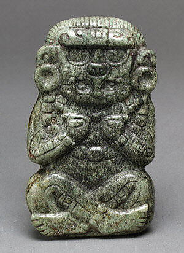

-

- 
Deity Figure
3rd–6th century
This jade figurine depicts a cross-legged figure with his arms bent in toward his chest and hands curled into what Maya scholars call a “crab-claw” position. This pose is found so commonly in Early Classic (ca. 250-500AD) Maya art that it is considered a diagnostic feature of that time period. Although the figure’s body is human, the face is that of a great supernatural avian known as the Principal Bird Deity. The figurine either represents an anthropomorphic (i.e. humanized) version of the Principal Bird Deity or depicts a human individual wearing a Principal Bird Deity mask. The figure is shown cross-eyed, with large eyes and square pupils. These kinds of eyes are used to identify shining, solar, and/or resplendent supernatural beings in Maya art. The pupils look in at a small nose with in-curving nostrils. The nose sits atop a beak that has been flattened downward against the face in a frontal view. When seen in profile images, this beak has a distinct bracket shape and is frequently depicted with an upper and lower tooth inside it (see 1978.412.90a, b).
The deity is covered in jewelry, wearing large earflares, a beaded necklace, beaded bracelets, and beaded anklets, while a jade-beaded beard is visible below his chin. The u-shaped motif carved between his eyebrows was used in early Maya art to mark precious materials. Combined with his shining, solar eyes, these features label the Principal Bird Deity as a supernatural being of resplendent, precious jade. Even his skin has the texture of jade beads (his calves are carved with beaded designs). In Maya art, the patterns carved or painted onto the skin of deities often takes on special meaning, giving the viewer clues as to the figure’s physical nature. On one vessel (1978.412.206), for instance, the storm deity Chahk has calves painted like the belly of a snake, referencing his wet, reptilian nature.
The figurine lacks suspension holes, so it was not worn as an ornament as many of the carved jades in the Met’s collection once were (see, for example, 1978.412.57, 1985.216.2, and 2007.134). This figurine is believed to have come from the vicinity of Copan, Honduras. Several similar figurines—nearly identical in size and carving style—have been recovered from offertory caches at the site, so it is very likely that this figurine was used in a similar offertory context. Often held in large ceramic vessels, the Copan caches represent cosmograms, or cosmic models in miniature. A single jade figurine, most often a cross-legged ruler, was placed in the center of the tableau, representing the cosmic center. It was then surrounded by carefully articulated materials, such as shells, jade beads, stingray spines, and colored pigments, arranged to symbolize the four world directions and layers of the universe. The Copan figurines were also frequently painted with a thick coating of cinnabar and were sometimes accompanied by liquid mercury, which forms when cinnabar is exposed to intense heat and pressure.
The Principal Bird Deity is a relatively misunderstood figure. In the majority of sources, he is equated with a character called Vucub Caquix (“Seven Macaw”), who appears in the Popol Vuh, a 16th century mythical history written by the highland Quiche Maya. The Popol Vuh describes Seven Macaw as an arrogant deity who, because of his fabulously bright, jeweled teeth, began to boast that he was brighter than the sun. The Hero Twins, the main protagonists in many of the Popol Vuh stories, soon put him in his proper place, shooting him out of a tree with a blowgun and ripping out his shining teeth. This story is a morality tale, describing an imbalance, a comeuppance, and how these came to put the world in order again. Although it may be tempting to equate the Principal Bird Deity of the ancient Maya with this later iteration, nearly 2,000 years separate the first appearance of the Principal Bird Deity in Maya art (ca. 200 B.C.) from the 16th century Seven Macaw. As recent research demonstrates, the Principal Bird Deity underwent significant changes through this stretch of time (which included the Classic Maya collapse and the Spanish conquest). Although the two avian supernaturals are certainly closely related, it is best to see them as two distinct figures that arose as responses to (and products of) distinct historical contexts.
The Principal Bird Deity was one of the most significant gods of the early Maya pantheon. He represented the animate embodiment of jade, the most precious of all substances in the ancient Maya world. Jade was both extremely rare (coming from a single source located in the Motagua River Valley of eastern highland Guatemala) and extremely hard (approaching 7 on the Mohs scale of hardness). In order to transform a raw jade boulder into a polished, finished form, specialists used a combination of percussion and abrasion techniques. This work was repetitive, time consuming, and required a highly specialized skillset. The hardness of jade likely explains the flattened nature of this figurine’s relief, particularly the compression of the avian’s beak flush against his face. The combination of restricted access and the expertise required for its carving made jade a particularly valuable material for the ancient Maya. It played a significant role not only in economic exchange systems and elite displays of power and wealth, but in belief systems, cosmological precepts, and mythical histories (for more on jade, including a detailed bibliography, see 1994.35.590a, b).
The figurine has an unusual color. Generally speaking, the ancient Maya prized clear, bright apple green and blue-green jade. The surface of the front of this figurine, however, has been discolored, especially the area around the face and torso, with the incised lines in these zones particularly blackened. Although some of the black material appears to be a substance scholars call meta-cinnabar, the majority of the figurine’s blackened surface is the result of surface discoloration rather than accretion. Jade is highly resistant to surface changes, so this discoloration is notable. That said, heat, and long exposure to certain elements have been known to cause surface color changes. Subjecting jade to fire, for example, turns it an opaque white, while it is rumored that long exposure to mercury (or to soil with a high mercury content) will blacken its surface.
Remnants of cinnabar are visible in the incised lines that curve along the edges of this figure. If the ceremony associated with this offering included burning (a common component of both ancient and contemporary Maya ritual practice), it is quite possible that some of the cinnabar coating the figurine would have been transformed into mercury. At Copan, liquid mercury was a popular component of offertory caches. In some cases, it appears to have been created by setting an offering containing cinnabar on fire and then covering it with a heavy object, increasing the heat and pressure enough to convert the cinnabar into mercury. The figurine’s color is bright around the edges and along the back, but blackened on the front. If the Met figurine was coated in cinnabar and then placed facedown over an area of burning, this might explain this pattern of discoloration. With the heat and pressure, much of the cinnabar would have transformed into mercury. The figurine would have then lain face down in mercury or in soil impregnated with mercury for centuries, dramatically altering its original color over time.
Although his primary association was with jade, the Principal Bird Deity was, more generally, a personification of the earth’s riches. He thus also embodied iridescent green quetzal feathers, shining green maize fields, and precious rain. This particular figurine emphasizes the watery nature of the deity. In contrast to the jade-beaded flesh of his calves, his forearms have been given the texture of snakeskin, marking him as a watery being (see 1978.412.206). His curving eyebrows are frequently seen on piscine and/or reptilian deities and are one of the diagnostic features found in early images of the storm god Chahk. His beard, carved into straight lines and jade beads, represents droplets of falling rain. To the ancient Maya, jade was believed to be the incarnation of water, mist, and breath, so jade beads (in art and in reality) were conceived of as water rendered in solid form. As a creature of jade, the Principal Bird Deity was thus also a creature of moisture, breath, and falling rain.
The Principal Bird Deity played an important role in ancient Maya myths associated with the beginnings of the world. He appears to have participated in the raising of the four world trees and center, which set out the four sides of the cosmos and separated the sky from the earth’s surface. This narrative is seen in the beautiful polychrome murals of San Bartolo, dating to approximately 100 B.C., where five great Principal Bird Deities oversee the sacrifices associated with the raising of these first world trees. The Principal Bird Deity himself was viewed as a quadripartite deity, a fact that explains why four Principal Bird Deity heads were painted as directional hieroglyphs on the four walls of an Early Classic (ca. A.D. 450) tomb at Río Azul. The center of the world was associated with the hieroglyph yax, meaning unripe/ new/ blue/ green. The color of jade was thus the color of the cosmic center, or axis mundi. These concepts explain the placement of figurines like this one as the central element of cache assemblages. The Principal Bird Deity was both the embodiment of the cosmic center as well as the four directions that radiated outward from it.
This and several nearly identical Principal Bird Deity figurines from Copan closely resemble another group of Copan figurines that depict human rulers. These rulers are shown in the same cross-legged seated position, with bent arms and crab-claw hands resting against their chests. Some of these kings wear headdresses depicting the face of the Principal Bird Deity. This visual similarity may equate this representation of the Principal Bird Deity with great mythical kings, or it may tell us that it represents a king in a Principal Bird Deity mask.
The Principal Bird Deity was closely associated with the office of kingship. Recent research has demonstrated that this supernatural avian played a key role in the mythical events that transpired to give humans the right to rule. Various carved and painted scenes appear to record a mythical event in which the Principal Bird Deity brought down a great, precious bundle from the heavens. He bestowed this bundle, filled with all of earth’s riches (including jade, corn, quetzal plumes, and rain) upon the first human ruler, Huun Ajaw. This event was framed as one of the great foundational sacrifices. Just as the Maize God was believed to have sacrificed himself to provide flesh for the first human beings, the Principal Bird Deity was sacrificed so that the first human kings could rule. The death of the Principal Bird Deity thus represents a moment of transition, when the riches necessary not just for human life but for elite hierarchy and economic exchange systems were bestowed upon the first kings, thereby giving them the right (and the means) to rule.
The coating of this green jade figurine in red cinnabar would have echoed these associations with world foundations and transformations by contrasting the green of new growth and agricultural fertility with a bright red pigment associated with sacrificial blood. The magical metamorphosis of red cinnabar into silver liquid mercury, brought about through the transformative medium of fire, may have added further physical depth to these ideas of transition and rebirth. As the central element in a tableau that configured the world in miniature, the figurine would have recreated the cosmic center and the four directions that spread outward from it. It was a powerful symbol of centrality and preciousness, which, like a seed, held the potential of growth, ripening green, new life, and rejuvenation.